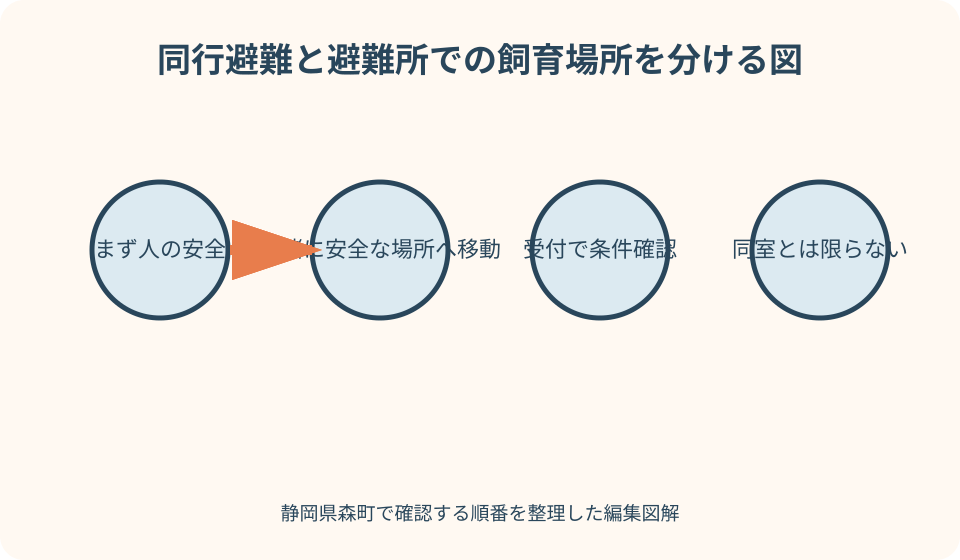
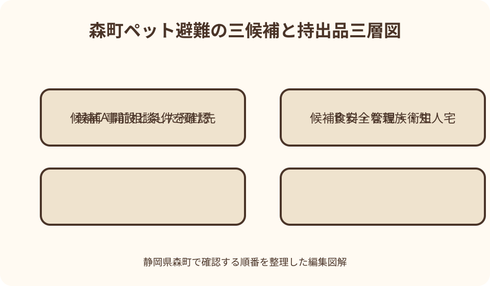

防災・家族の備え｜最終確認 2026-08-10
静岡県森町のペット同行避難準備｜同室とは限らない避難所確認と持出品
災害時にペットと安全な場所まで移動する同行避難は、避難所の居住区画で人と動物が一緒に過ごせるという意味ではありません。静岡県森町の避難所一覧で施設名を見つけても、動物の受入条件、飼育場所、必要な用品まで確定したことにはならない点が出発点です。

編集イラスト最初に区別する：同行避難は同室避難の約束ではない
環境省の飼い主向けガイドラインでいう同行避難は、災害が起きたとき、飼い主がペットを連れて安全な場所まで避難する行動を指します。避難所に着いた後、人の生活区画でペットを飼えることや、同じ部屋で過ごせることを表す言葉ではありません。
この違いを曖昧にすると、『同行避難が原則だから、どの避難所でも同室に入れる』という誤解につながります。実際の飼育場所や方法は、その災害で開設された施設の構造、避難者数、衛生環境、運営側の指示などにより変わります。
森町の町指定避難所等のページは、地域ごとの施設と所在地を探す入口です。一方、公開されている施設一覧だけから、犬、猫、鳥などの種類別受入、屋内外の飼育場所、ケージ寸法、車での来場可否まで判断することはできません。
したがって、この記事も特定施設での受入や同室飼育を保証しません。平時には森町危機管理課へ確認し、災害時には町が発表する実際の開設先と、その場の避難所運営者の案内に従うという二段階で考えます。
人の安全を先に確保してからペットを連れ出す
環境省は、災害時にはまず飼い主自身と家族の安全確保を挙げています。揺れている最中に家具の下へ入った猫を無理に引き出す、浸水が始まった道を戻る、土砂が動いた斜面側へ探しに行くといった行動は、人と動物の双方を危険にします。
地震なら頭を守り、揺れが収まってから出口、火元、家族のけがを確認します。大雨なら、川や水路へ見に行かず、町の防災情報と気象情報を早めに確認します。ペットを捕まえる時間を含め、危険が迫る前に動くことが重要です。
逃げた動物を見つけても、倒壊のおそれがある建物や冠水路へ追い込まないでください。安全な範囲で居場所と時刻、特徴を記録し、状況が落ち着いてから自治体、保健所、警察、動物病院など現在の案内先へ連絡します。
家族の担当は『抱く人』だけでなく、玄関を開ける前にリードを付ける人、キャリーを運ぶ人、人用持出袋を持つ人、情報を確認する人まで決めます。一人しか在宅していない場合の優先順も、紙に残しておきます。
森町の地図で自宅・経路・避難先候補を重ねる
森町防災ハザードマップは、河川氾濫や土砂災害の危険箇所と防災関係施設を示しています。まず自宅の災害リスクを災害種別ごとに見て、次に避難先候補、最後にその間の道を確認します。施設名だけを先に選ぶと、経路上の危険を見落とします。
森地区、一宮、園田、飯田、天方、三倉では、地形も移動距離も同じではありません。橋、川沿い、斜面沿い、狭い道を避ける経路を二つ考え、昼と夜、晴天と雨天で見え方が変わる場所も地図へ記します。
キャリーに動物を入れ、人用の荷物も持って歩くと、普段の散歩より速度が落ちます。安全な日に家から短い区間を実際に持ち、重さ、段差、休憩場所を確かめます。危険区域へ練習のために入る必要はありません。
自宅が安全で在宅避難が可能な場合もありますが、それはペットがいるから自動的に選べる方法ではありません。建物の損傷、浸水や土砂のリスク、ライフライン、余震、町の避難情報を踏まえ、人の安全を基準に判断します。
避難所へ平時に尋ねる七つの具体事項
問い合わせでは、『ペットは大丈夫ですか』だけで終えません。想定する動物種と頭数を伝え、同行できる入口、受付方法、飼育予定場所、必要なケージ、飼い主が行う清掃、持参物、利用できない場合の案内先を分けて尋ねます。
さらに、補助犬と家庭動物を混同しないこと、発情中、感染症の疑い、強い攻撃行動がある場合の扱い、停電時の空調、排泄物の保管場所も確認候補です。ただし、回答は平時の想定であり、発災時の受入を確約するものではありません。
回答を記録するときは、確認日、担当部署、動物種、質問、回答、未確定事項を書きます。個人名を外部へ公開する必要はありません。半年から一年に一度、または飼育頭数、健康状態、避難所情報が変わったときに見直します。
森町が災害時に開設する施設は、災害種別や被害状況によって変わり得ます。平時に最寄りの施設を知ることは大切ですが、『一覧にあるから必ず開く』『以前入れたから今回も同じ』とは考えず、当日の公式発表を優先します。

持出品は命・管理・衛生の三層でそろえる
最優先は、療法食を含むフード、水、常用薬です。静岡県は少なくとも五日分、できれば七日分以上を示しています。災害時に普段の商品が手に入るとは限らないため、食べ慣れた物を日常で使いながら期限前に入れ替えます。
次に、キャリーやケージ、予備の首輪・ハーネス、伸びないリード、洗濯ネット、食器、タオルをまとめます。猫を腕だけで運ぶ、犬を首輪だけで引く方法は、驚いたときの逸走を防ぎにくいため、二重の逃走防止を考えます。
衛生用品は、ペットシーツ、猫砂、排泄袋、新聞紙、消臭用品、手袋、ウェットシート、掃除用袋を一群にします。人用と動物用を色や袋で分け、飼い主以外でも迷わず取り出せる表示を付けます。
全部を一袋に詰めると重くなるので、直ちに持つ一次袋と、余裕があれば運ぶ補充箱に分けます。一次袋には薬、少量の食料と水、識別記録、リード、排泄用品を置き、補充箱には追加のフードや砂を置く設計が現実的です。
ケージは備品ではなく毎日の練習場所にする
押し入れから災害当日に初めて出すキャリーは、動物にとって見慣れない箱です。普段から扉を開けて生活空間に置き、寝床や食事の近くにして、自分から入ったら静かに褒めるところから始めます。罰を与える場所にはしません。
短時間の扉閉め、持ち上げ、家の中の移動、玄関先までの移動と、負担の少ない段階に分けます。息が荒い、よだれ、震え、激しい抵抗が続く場合は練習を中断し、獣医師や行動に詳しい専門家へ相談します。
犬は『待て』『おいで』など安全に直結する合図、猫は洗濯ネットやキャリーへの誘導、小動物は移送容器への移動を練習します。完璧な服従を目標にせず、扉の開閉時に飛び出さない手順を家族で統一します。
薬で眠らせれば運べると自己判断しないでください。種類、持病、年齢、気温によって危険が異なります。移動時の強い不安や乗り物酔いがあるなら、災害前の診療時に獣医師へ相談し、処方と使用条件を記録します。
迷子と治療中断を防ぐ記録を二系統で持つ
首輪の迷子札や犬の鑑札・注射済票など、動物に付ける識別と、飼い主が持つ記録を組み合わせます。森町は犬について登録、年一回の狂犬病予防注射、鑑札と注射済票の装着などを案内しています。平時の法定手続も避難準備の土台です。
マイクロチップを装着している場合は、登録されている氏名、住所、電話番号が現状と合うか確認します。装着だけで連絡が届くとは限りません。首輪が外れる場合もあるため、単独の方法に頼らないことが大切です。
スマートフォンには、全身、顔、模様や傷など特徴が分かる写真と、飼い主が一緒に写る写真を保存します。紙にも印刷し、名前、種類、性別、年齢、毛色、体重、性格、かかりつけ先、薬を簡潔に書きます。
診療記録は、ワクチン歴、持病、アレルギー、投薬名、量、時刻を更新します。薬袋の写真だけでは変更前の処方と見分けにくいため、最終更新日を添えます。これは応急の情報であり、獣医師の診断や処方を代替しません。
犬猫以外と多頭飼育は個別の温度・設備計画を持つ
鳥、うさぎ、ハムスター、爬虫類、魚などは、一般的な犬猫用ケージやフードで代用できない場合があります。保温、冷却、照明、給水、換気、逃走防止、餌の保存方法を種類ごとに書き、停電時に何時間持つかを試算します。
多頭飼育では、全頭を安全に収容できる数の容器と、一人で運べる重量を照合します。相性の悪い個体を同じケージへ入れる前提にせず、家族が不在の時間帯に誰が運ぶか、近隣へ協力を頼めるかを具体化します。
大型犬や高齢動物、歩行が難しい動物には、担架代わりの毛布、持ち手付きハーネス、滑り止めなどが役立つことがあります。ただし、持ち上げ方で痛みや呼吸を悪化させる可能性もあるため、平時に獣医師へ安全な介助方法を聞きます。
特殊な温度管理や許可が関係する動物は、一般避難所だけで対応できるとは限りません。飼育用品店、かかりつけ医、同種の飼育経験者、事前に了承を得た預け先を含め、動物種に合った別経路を早めに準備します。
避難所生活では飼い主の管理と他者への配慮が要る
避難所には、動物が苦手な人、アレルギーのある人、乳幼児、体調の優れない人も集まります。静岡県は地域の訓練で、動物が苦手な人への配慮やペットスペースの飼育環境を話し合うことを勧めています。
受付では動物を勝手に居住区画へ入れず、種類、頭数、健康状態、咬傷歴や逃走のおそれを伝えます。指定された場所、動線、時間帯を守り、給餌、給水、排泄、清掃、散歩、鳴き声への対応を飼い主側の仕事として分担します。
排泄物や食べ残しは、臭いだけでなく害虫や感染症の問題につながります。処分場所を確認し、密閉し、共用の水場や調理場所を汚さないようにします。手洗いとケージ周辺の清掃記録も、交代で世話をするときに役立ちます。
体調不良や強い興奮が見られたら、周囲から距離を取り、運営者へ伝え、必要に応じて獣医師へ相談します。動物同士を挨拶させることを優先せず、リードやケージ越しでも十分な間隔を保ちます。
避難所に入れない場合の第二・第三候補を予約する
安全な地域にある親族・知人宅は、有力な候補になり得ます。ただし、動物可か、同居動物との相性、アレルギー、駐車、長期化した場合の費用を事前に話し合います。住所が安全かは災害種別ごとに地図で確かめます。
動物病院、ペットホテル、民間施設も、発災時に営業できるとは限りません。災害時の一時預かりを日常の宿泊サービスと同一視せず、受入条件、ワクチン証明、投薬、料金、休業時の連絡方法を平時に確認します。
候補はAを開設中の避難所、Bを安全な親族宅、Cを事前相談した預け先というように並べます。どの候補にも『使える条件』『使えない条件』『確認先』を付け、連絡がつかない場合の次の行動まで書きます。
車内を長期の飼育場所にする案は、熱中症、一酸化炭素中毒、エコノミークラス症候群、余震や浸水などの危険を伴います。駐車できる保証もないため、車があることだけで代替先の準備を省かないでください。
ペット同行避難準備の良い点
良い点は、動物のための準備が、人の避難開始を早める材料になることです。捕獲に何分かかるか、荷物が何キログラムになるかを実測すると、警報が出てから考えるのでは遅い家庭が具体的に分かります。
キャリー練習や迷子札の更新は、災害時だけでなく通院、工事、来客、脱走防止にも役立ちます。フードを循環備蓄すれば、物流の遅れや急な入院にも対応しやすくなり、無駄な買い置きも減らせます。
地域の防災訓練で動物の動線を話題にすれば、飼い主以外が感じる不安も事前に見えます。犬が苦手な人と飼い主を対立させるのではなく、受付、飼育場所、清掃、掲示を分ける設計へつなげられます。
また、ペットの頭数、薬、預け先を家族が共有すると、飼い主本人がけがをした場合にも引継ぎやすくなります。世話の善意だけに頼らず、餌の量、投薬時刻、触られるのが苦手な場所まで短く書くのが有効です。

ペット同行避難準備で注文したい点
注文したい点は、避難所一覧とペット受入情報を、利用者が同じ画面で把握しにくいことです。施設ごとの平時の想定、発災時の変更可能性、問い合わせ先を、同室可否とは別に示す一覧があれば、飼い主の誤解を減らせます。
地域の訓練でも、人の受付を終えてから付随的に動物を考えるだけでは実効性が足りません。キャリーを持つ避難者の動線、犬と猫の距離、雨天時の屋根、排泄物の一時保管、逸走時の連絡を机上で確認したいところです。
飼い主側にも注文があります。『かわいいから大丈夫』『おとなしいからケージ不要』という自己評価は、避難所での安全根拠になりません。平時と異なる音、臭い、人の密度で行動が変わる前提に立ち、物理的な逸走防止を用意します。
一方で、受入条件が不明だからといって避難自体を諦めるのも危険です。早い段階で町へ相談し、複数の避難先を準備し、差し迫った危険では人命を最優先にするという順序を崩さないことが必要です。
代案・結論：一か所依存をやめ、条件付きの三案を持つ
結論は、『ペット可の避難所を一つ探して終わり』ではなく、災害種別と開設情報に応じて使い分ける三案を持つことです。第一候補が安全でも、道が通れない、満員、動物区画を設けられない場合があります。
第一案は、町が開設を発表し、その時点の動物受入条件を確認できた施設です。第二案は、安全な地域にあり受入を了承した親族・知人宅、第三案は災害時対応を相談済みの動物病院や民間預け先などです。
自宅が災害リスクと建物状態の両面で安全なら、在宅避難も選択肢になり得ます。ただし、動物が落ち着くという理由だけで危険な家に残らず、森町のハザードマップ、避難情報、建物の損傷、ライフラインを確認します。
今日できる最小の一歩は、キャリーに連絡先を付け、七日分を目安に現在のフードと薬の日数を数え、避難先候補へ確認する質問を書き出すことです。答えが未確定なら、その事実と次の確認日も計画の一部にします。
大石の視点：家の玄関から運べる計画かを測る
大石の視点では、避難計画は地図上の線だけでなく、家の中から始まります。倒れた家具でキャリーの保管場所へ行けない、玄関までの廊下が狭い、屋外へ出た瞬間に猫が逃げる、といった住まい固有の弱点を先に見ます。
キャリーを最上段や物置の奥へしまうと、揺れの後に取り出せないかもしれません。寝室と出入口の途中に安全な保管場所を選び、家具転倒を避け、夜でも分かる表示を付けます。リードは玄関だけでなく予備を持出袋にも入れます。
賃貸住宅や集合住宅では、共用廊下、階段、管理規約、近隣への配慮も確認します。戸建てでは、窓や塀の破損、屋外飼育設備、庭から道路への逸走経路を確認します。どちらも物件種別だけで安全を決められません。
不動産の立場からも、ペットの存在を理由に無理な移動や売却へ結び付けるべきではありません。まず住み続けるための転倒防止と備蓄、次に一時避難、最後に長期の住まいという時間軸で、家族の選択肢を整理します。
発災当日の五段階チェック
第一段階は人の安全です。揺れ、浸水、火災、土砂の危険から離れ、家族のけがを確認します。第二段階で、無理のない範囲でペットをリード、ネット、キャリーへ収容し、逃走防止を二重にします。
第三段階は情報です。森町の防災情報で避難情報と開設先を調べ、ラジオや県の防災情報など別経路でも照合します。SNSの未確認投稿だけで、遠い施設へ移動したり、閉鎖中の道へ向かったりしません。
第四段階は移動です。ハザードマップで準備した安全な経路を基本にしつつ、現場の冠水、崩落、火災を見たら引き返します。車を使う場合も渋滞や道路寸断、駐車不可を想定し、車だけに依存しません。
第五段階は受付と記録です。運営者へ動物の種類、頭数、健康状態を伝え、指定された飼育場所を確認します。世話の担当、給餌、投薬、排泄、散歩を紙へ書き、交代時の抜けを防ぎます。
月一回十分でできる更新と家族共有
毎月一回、フード、水、薬、トイレ用品の残量と期限を見ます。薬が変わった月、引っ越した月、動物が増えた月は、識別票、診療記録、避難先候補、家族の担当も同時に更新します。
年に一度は、キャリーを持って玄関まで動き、所要時間と重量を測ります。避難所へ実際に押しかけて訓練するのではなく、地域の防災訓練にペット同行が可能かを事前に尋ね、運営側の案内に従います。
家族共有表は、ペット名、写真、捕まえ方、持病、薬、かかりつけ先、第一から第三の避難先、町の情報確認先、最終更新日の一枚で構いません。詳細資料は番号を振り、一枚からたどれるようにします。
個人情報や診療情報を含むため、公開SNSへ置かず、紙は防水袋、データは家族が災害時にも開ける安全な場所へ保存します。連絡先の変更後は古い版を破棄し、誰が最新版を持つか確認します。
まとめ：受入を決めつけず、運べる準備を積み上げる
静岡県森町でのペット同行避難は、安全な場所まで一緒に移動する行動であり、避難所での同室飼育を意味しません。施設一覧は候補を探す入口として使い、具体的な受入条件は平時と発災時の両方で確認します。
準備の中心は、七日分を見据えた食料と水、常用薬、キャリー、リード、排泄用品、識別情報、診療記録です。用品を買うだけでなく、入る、持つ、歩く、受付で伝えるところまで練習して初めて機能します。
避難所だけに依存せず、安全な親族・知人宅や事前相談済みの預け先を重ねます。いずれも利用を保証された場所とは考えず、災害種別、道路、開設状況、相手方の受入可否をその都度確かめます。
最後に優先するのは人命です。危険な建物や浸水路へ戻らず、森町の公式情報と現場の状況を見て早めに動いてください。迷う部分は平時に危機管理課、かかりつけの獣医師、候補施設へ分けて相談します。
公式情報・確認先
掲載内容は次の一次情報を基礎に整理しました。営業、料金、催し、交通は変わるため、出発前または手続き前にリンク先で最新情報を確認してください。
- 防災情報（静岡県森町、2026-08-10確認）
- 森町防災ハザードマップ（静岡県森町、2026-08-10確認）
- 新型コロナウイルス感染症を踏まえた避難所運営ガイドラインを策定しました（静岡県森町、2026-08-10確認）
- 町指定避難所等について（静岡県森町、2026-08-10確認）
- 犬の飼い方について（静岡県森町、2026-08-10確認）
- ペットの地震対策（静岡県、2026-08-10確認）
- 人とペットの災害対策ガイドライン（一般飼い主編）（環境省、2026-08-10確認）
- ペットの災害対策（環境省、2026-08-10確認）
- 災害への備えチェックリスト（環境省、2026-08-10確認）